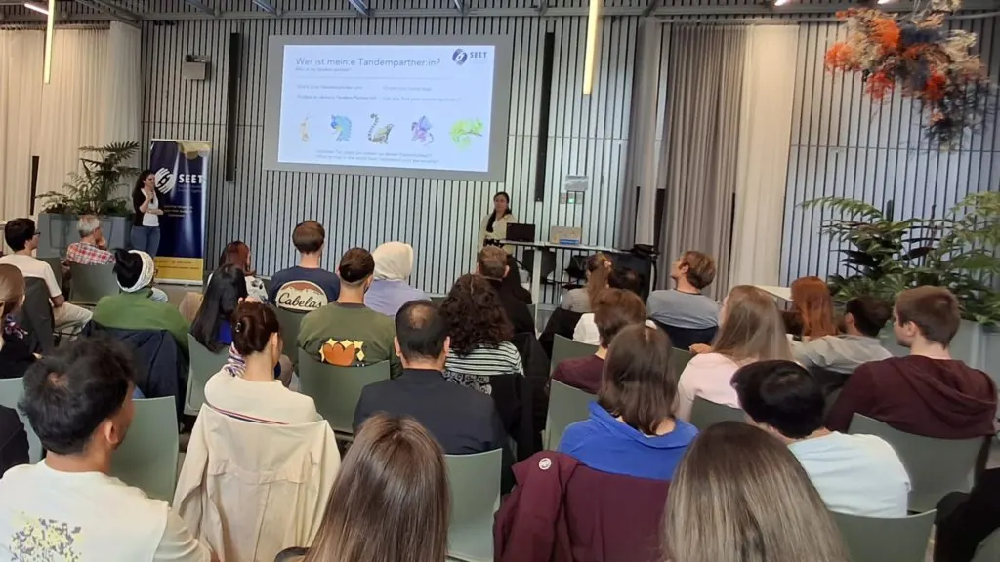
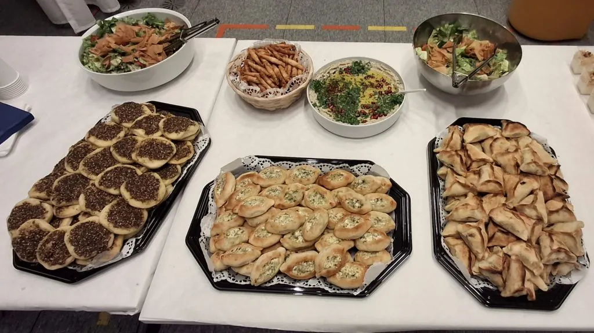

Der SEET-Jahrgang 2026–27 startet seine Mentoring-Reise
SEET’s class of 2026-27 kick-off their mentorship journey
La promotion SEET 2026–27 démarre son parcours de mentorat
Im Jahr 2022 lancierte der Rektor der ETH Zürich PBLabs als strategische Initiative zur Förderung der projektbasierten Ausbildung und zur Stärkung der Absolventen, damit sie sich in einer Welt des Wandels zurechtfinden und die Herausforderungen von morgen meistern können».
Am Abend des Montags, 18. Mai 2026, fand dort der Auftakt zum SEET-Studienförderungsprogramm 2026–27 statt. Dabei trafen 41 Flüchtlinge auf die Mentorinnen und Mentoren, die ihnen in den kommenden zwölf Monaten helfen werden, sich in ihrer eigenen Welt des Wandels zurechtzufinden.
Cara und Yurena vom SEET-Freiwilligenteam waren die Gastgeberinnen des Abends und stellten sicher, dass – da einige der Mentees noch recht neu in der Schweiz sind – jeder Programmpunkt sowohl auf Deutsch als auch auf Englisch erklärt wurde.

Nach einigen ersten „Eisbrecher“-Aktivitäten war es Zeit für das Kennenlernen zwischen Mentees und Mentoren. Alle Anwesenden mussten ihren Partner anhand eines passenden Tieres identifizieren, das auf ihrem jeweiligen Namensschild aufgedruckt war!
Die Mentees wurden gebeten, ihre Lernreise für das kommende Jahr zu skizzieren. Dabei ging es darum, SMART-Ziele (spezifisch, messbar, erreichbar, relevant und terminiert) zu definieren, mögliche Hindernisse zu identifizieren – etwa das Erreichen von Deutschkenntnissen, die Anschaffung eines Laptops oder die Organisation der Kinderbetreuung – sowie weitere Ressourcen zu benennen, bei denen ihre Mentorinnen und Mentoren oder SEET sie unterstützen können. Diese dienen anschliessend als Grundlage für die «Mentorenvereinbarung», die bis Ende Juni von jedem Tandem gemeinsam unterzeichnet werden muss.
Im neuen Programmzyklus haben 24 Mentees ihre Teilnahme um weitere zwölf Monate verlängert, während 17 zum ersten Mal dabei sind. Die Gruppe besteht aus 26 Frauen, 14 Männern und einer nicht-binären Person. Die Teilnehmenden sind mehrheitlich in Zürich ansässig, doch als Zeichen für das wachsende schweizweite Profil von SEET reisten weitere Mentees aus dem Aargau, Appenzell Ausserrhoden, Bern, Freiburg, Schaffhausen, Solothurn, St. Gallen und Uri an.
Die grösste Gruppe stammt ursprünglich aus der Ukraine, weitere Teilnehmende kommen aus Afghanistan, Belarus, Georgien, dem Sudan, Syrien und der Türkei.

Natürlich wäre eine SEET-Veranstaltung ohne Apéro nicht komplett. Dieser ermöglichte es den Anwesenden – darunter auch eine grosse Gruppe aus dem SEET-Team –, sich weiter kennenzulernen, Fragen im persönlichen Gespräch zu stellen und sicherzustellen, dass niemand mit leerem Magen nach Hause ging.
Es war nicht nur schön, dass die Mentees ihre Reise mit SEET fortsetzen, sondern auch, dass unter den Mentoren viele bekannte Gesichter zu sehen waren. Einige, wie Alex und Daniel, haben ihr Engagement verlängert, um ihren ursprünglichen Partner zu unterstützen. Andere, wie Giverny, Joseph und Ahmadullah – um nur drei zu nennen – setzen ihre Teilnahme im Zyklus 2026–27 fort, diesmal jedoch mit einem/einer neuen Mentee.
Die Mentees und Mentoren treffen sich Mitte Oktober als Gruppe zum Reflexionstreffen; dieses gilt traditionell als „Halbzeitpunkt“ ihres Engagements. Die Abschlussfeier ist für Ende Februar 2027 geplant.
Wenn Sie daran interessiert sind, SEET als zukünftige:n Mentor:in, Spender:in, Partner:in oder Freiwillige:n zu unterstützen, senden Sie uns bitte eine E-Mail an: seet@seet.ch
In 2022, the Rector of ETH Zurich launched PBLabs as a ‘strategic initiative to promote project-based education and to empower graduates as they navigate a world of change and tackle the challenges of tomorrow.’
On Monday 18 May 2026, the venue played host to the kick-off of SEET’s 2026-27 Study Support Programme where forty-one refugees, seeking to navigate their own world of change, met the mentors who will help them do so over the next twelve months.
Cara and Yurena from the SEET volunteer team were the evening’s hosts, and ensured – as some of the mentees are quite new to Switzerland – that each part of the proceedings was outlined in both German and English.
After some initial ‘break the ice’ activities, it was time for the mentees and mentors to meet each other. Everyone gathered in the room had to identify their partner via a matching animal printed on their respective name badges!
The mentees were asked to outline their learning journey for the year ahead. This process involved identifying SMART goals (Specific, Measurable, Achievable, Relevant and Time-Bound), any obstacles that may need to be navigated (for example, achieving German language proficiency, purchasing a laptop or securing childcare arrangements) and any other resources they may require, which their mentors or SEET can support with. These form the basis of the mentor agreements which must be co-signed by each pair, by the end of June.
On the new programme cycle, twenty-four mentees have extended their involvement for another twelve months, whilst seventeen are participating for the first time. The group of twenty-six women, fourteen men and one non-binary participant are primarily based in Zürich, but in a sign of SEET’s growing pan-Switzerland profile, other mentees live in Aargau, Appenzell Ausserrhoden, Bern, Fribourg, Schaffhausen, Solothurn, St Gallen and Uri.
The largest group originally hail from Ukraine, with others from Afghanistan, Belarus, Georgia, Sudan, Syria and Türkiye.
Of course, a SEET event would not be complete without an Apero, enabling those present – including a large contingent from the SEET team – to get to know each other further, ask questions one-to-one, and equally importantly, ensure no-one went home with an empty stomach.
As well as the mentees continuing their journey with SEET, it was fantastic to see many familiar faces among the mentors too. Some, like Alex and Daniel, have extended their involvement to support their original partner. Others like Giverny, Joseph and Ahmadullah, to name just three, are continuing their participation on the 2026-27 cycle, but this time with a new mentee.
The mentees and mentors will next come together as a group for the Reflection Meeting in mid-October which is historically seen as the ‘half-way’ mark of their involvement. The graduation ceremony is set to take place at the end of February 2027.
If you would be interested in supporting SEET as a future mentor, donor, partner or volunteer, please email us at: seet@seet.ch
Im Jahr 2022 lancierte der Rektor der ETH Zürich PBLabs als strategische Initiative zur Förderung der projektbasierten Ausbildung und zur Stärkung der Absolventen, damit sie sich in einer Welt des Wandels zurechtfinden und die Herausforderungen von morgen meistern können».
Am Abend des Montags, 18. Mai 2026, fand dort der Auftakt zum SEET-Studienförderungsprogramm 2026–27 statt. Dabei trafen 41 Flüchtlinge auf die Mentorinnen und Mentoren, die ihnen in den kommenden zwölf Monaten helfen werden, sich in ihrer eigenen Welt des Wandels zurechtzufinden.
Cara und Yurena vom SEET-Freiwilligenteam waren die Gastgeberinnen des Abends und stellten sicher, dass – da einige der Mentees noch recht neu in der Schweiz sind – jeder Programmpunkt sowohl auf Deutsch als auch auf Englisch erklärt wurde.
Nach einigen ersten „Eisbrecher“-Aktivitäten war es Zeit für das Kennenlernen zwischen Mentees und Mentoren. Alle Anwesenden mussten ihren Partner anhand eines passenden Tieres identifizieren, das auf ihrem jeweiligen Namensschild aufgedruckt war!
Die Mentees wurden gebeten, ihre Lernreise für das kommende Jahr zu skizzieren. Dabei ging es darum, SMART-Ziele (spezifisch, messbar, erreichbar, relevant und terminiert) zu definieren, mögliche Hindernisse zu identifizieren – etwa das Erreichen von Deutschkenntnissen, die Anschaffung eines Laptops oder die Organisation der Kinderbetreuung – sowie weitere Ressourcen zu benennen, bei denen ihre Mentorinnen und Mentoren oder SEET sie unterstützen können. Diese dienen anschliessend als Grundlage für die «Mentorenvereinbarung», die bis Ende Juni von jedem Tandem gemeinsam unterzeichnet werden muss.
Im neuen Programmzyklus haben 24 Mentees ihre Teilnahme um weitere zwölf Monate verlängert, während 17 zum ersten Mal dabei sind. Die Gruppe besteht aus 26 Frauen, 14 Männern und einer nicht-binären Person. Die Teilnehmenden sind mehrheitlich in Zürich ansässig, doch als Zeichen für das wachsende schweizweite Profil von SEET reisten weitere Mentees aus dem Aargau, Appenzell Ausserrhoden, Bern, Freiburg, Schaffhausen, Solothurn, St. Gallen und Uri an.
Die grösste Gruppe stammt ursprünglich aus der Ukraine, weitere Teilnehmende kommen aus Afghanistan, Belarus, Georgien, dem Sudan, Syrien und der Türkei.
Natürlich wäre eine SEET-Veranstaltung ohne Apéro nicht komplett. Dieser ermöglichte es den Anwesenden – darunter auch eine grosse Gruppe aus dem SEET-Team –, sich weiter kennenzulernen, Fragen im persönlichen Gespräch zu stellen und sicherzustellen, dass niemand mit leerem Magen nach Hause ging.
Es war nicht nur schön, dass die Mentees ihre Reise mit SEET fortsetzen, sondern auch, dass unter den Mentoren viele bekannte Gesichter zu sehen waren. Einige, wie Alex und Daniel, haben ihr Engagement verlängert, um ihren ursprünglichen Partner zu unterstützen. Andere, wie Giverny, Joseph und Ahmadullah – um nur drei zu nennen – setzen ihre Teilnahme im Zyklus 2026–27 fort, diesmal jedoch mit einem/einer neuen Mentee.
Die Mentees und Mentoren treffen sich Mitte Oktober als Gruppe zum Reflexionstreffen; dieses gilt traditionell als „Halbzeitpunkt“ ihres Engagements. Die Abschlussfeier ist für Ende Februar 2027 geplant.
Wenn Sie daran interessiert sind, SEET als zukünftige:n Mentor:in, Spender:in, Partner:in oder Freiwillige:n zu unterstützen, senden Sie uns bitte eine E-Mail an: seet@seet.ch